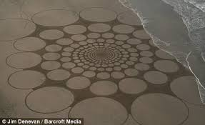
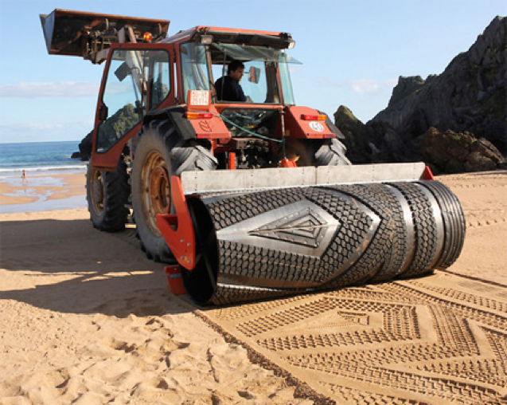
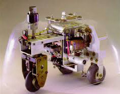

Project Overview
The invention of the difference engine in 1833, came with it an entire new process of thought and development. Since then, the field of computation and robotics has become one of the largest in the world. It is a field that requires developers to suspend their usual way of thinking and instead look at tasks and problems as a computer. These ways of thinking are not encountered in daily life. Other intellectual and physical fields have their foundations discovered through juvenile interactions. However, the ability to approach a task with an algorithmic method---a loop or conditional statements---is not naturally acquired. These skills must therefore be taught through non-conventional means. This could be as a teenager or adult, when first being confronted with programming; however, years of educational studies have shown that skills and understanding are much more easily acquired at an early age. This is the motivation of the \SandE project: to develop a method, useable by schools and parents, to begin to nurture programming skills in children.
The aim for this project is to develop a working prototype of a programmable, autonomous robot with the ability to draw large scale art in sand. The robot will be able to accept a set of repeatable instructions from a student.

These instructions could include: navigation, for example an instruction to go from point A to B before turning and traveling to point C; the ability to control whether the robot should be drawing at any given time, and also the thickness of the line drawn. The student will create these instructions through a graphical user interface, before they are uploaded to the robot and their design is created in sand. The intention is that by passing a design to a robot, students will be forced to think about how a computer will tackle a task they would find simple. Hopefully, students will be able to understand that computers use a system of specific logic that can create wonderful things, which would take much longer by hand.
Art Review

Land art (or Earth art) is a form of art which utilizes the landscape itself to produce the art. Structures are often made by placing natural materials, such as rocks or twigs, onto the land to form a pattern or picture. Another way they are produced is by sculpting the land itself to form patterns. The art itself is not simply placed onto the land, rather the land is the means of the creation. Pieces are often ephemeral in nature, being left to erode due to natural conditions over time, and so now only exist in photographic and video documentation. Land art is a largely American movement which began in the late 1960s. The movement is an offshoot of conceptualism and minimalism and was a protest to the commercialization of American art, leading the artists to produce works which were removed from the art market. It can be argued that land art was created by ancient cultures. Example of land art occurs around the world, such as the Nazca lines produced by the Nazca in southern Peru and The Great Serpent Mound in Ohio, US. It is believed these pieces could have been created as a form of worship to the Gods of the cultures which made these pieces.
The movement began with the group exhibition “Earth works” in New York City in October 1968. In the following year, Willoughby Sharp curated the “Earth Art” exhibition at Cornell University which included many artist, such as Robert Smithson and Richard Long, who were big influences within the movement. Due to their monumental size the pieces were usually documented in artworks using photographs and maps which the artist could exhibit in a gallery. Land art was occasionally also produced within the gallery. This was done by bringing in materials from the landscape and using them to create installations.... For the full review click here
Robotics Review

William Grey Walter was born in 1910 in Kansas City was a neurophysiologist in UK and USA. He made significant advancements to the EEG machine which allowed him to make several discoveries in the brain which include theta and delta waves. His research in the late 1940s led him to build some of the first ever autonomous robots, considered his most famous work.His aim was to study the basis of simple reflex actions and investigate further his theory that complex behavior resulting from neural connections. His robots, which he called ‘tortoises’, which he called due to their similarities in shape and appearance of the animals, were named Elmer and Elsie. The robots were able to move towards a light stimulus and thanks to this had the feature of returning to their charging station once they realized they were running low on power.
Logo is a simple educational programming language that was designed in 1967 at Bolt, Beranek and Newman (today known as BBN technologies), a technology lab based in Cambridge, Massachusetts. It introduces kids to the step by step approach to thinking that is necessary when programming. Logo is best remembered for having a turtle as a cursor which appeared in the centre of the screen. Turtle graphics is the construction of shapes and images using vector geometry to utilize relative direction and distance instead of regular Cartesian geometry. Users create shapes and patterns by navigating the turtle, resulting in a line, which traces the route the turtle has taken.... For the full review click here
Design and Manufacture
The design and manufacture team for the Sand.E project is made up of Arun Kallaivannan, Rob Kent, Calvin Lau and Alan Rutley. The team have taken the design from simple drawings to demensional CAD desgins, through carboard protoypes and finally to the perspex body that will take to the beaches.
The robot comprises of a clear perspex base plate, with space for all electronics to be mounted.
If inverted you will find the two motors mounted on the underside of the robot, with a castor wheel found at the rear.
Software and Electronics
The electronic hardware has been compiled, executed and maintained by Ashleigh Hyslop, Sam Searles-Bryant and Sam Wright. Sand.E has a brain constituing an Arduino 101 and several shields. These are: motor shield, servo shield and GPS shield. The use of most shields have proved simple, however the GPS shield has provided nothing but trouble! With two faulty shields and a third with an apparent update rate that even Samsung would be ashamed of, it remains to be seen whether the shield is usable.
Tackling the task of software for Sand.E are Alex Goodsell, Lorenzo Spadini and Luke Yeo. The Arduino IDE and associated libraries allows simple control of all the shields. In partiular the TinyGPS library allow GPS data to be easilly extracted and manipulated (if it's working...). All libraries built in to the IDE are based on c++, making it very simple to code most of the aspectd of Sand.E.